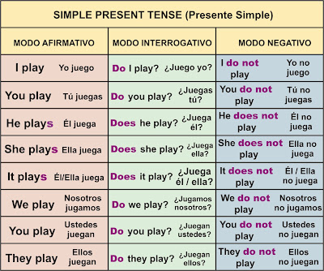

Simple Present
El present simple es uno de los tiempos verbales en inglés. Su uso correcto es muy importante porque se utiliza para múltiples situaciones, las cuales podrás encontrar un poco más abajo. Además, en este artículo conocerás sus usos principales, cómo se forma (estructura), su conjugación y, para terminar, algunas excepciones o casos únicos.
En inglés, el presente simple (en inglés, simple present o present simple) también denominado presente indefinido— es el tiempo verbal presente (de aspecto no perfecto). Es uno de los tiempos verbales del presente utilizados en inglés, además del presente progresivo, el presente perfecto y el presente perfecto progresivo. Se utiliza para hablar de cosas, hábitos diarios o actividades que suelen hacerse todos los días y no siempre son verdad. El presente simple es el primer tiempo verbal que se enseña en las lecciones de inglés, normalmente en la conjugación del verbo to be (ser o estar) y el verbo to have (tener o haber), temáticas que constituyen las bases para empezar a crear frases enteras en inglés.
